Ортодонтія · журнал «ДентАрт» 2019 №2
Ортодонтичне лікування бімаксилярної протрузії із застосуванням мікрогвинтів
BIMAXILLARY PROTRUSION TREATMENT USING MICROSCREW IMPLANTS
Михайло Соломонюк,стоматологічна клініка «Excelline» (м. Київ, Україна)
У статті подано клінічний приклад лікування пацієнтки з бімаксилярною протрузією. Співвідношення молярів було ІІ клас за Енглем, іклів – І клас. На підставі оцінки профілю обличчя за допомогою Z-angle, рівного 65°, дефіциту зубного ряду на нижній щелепі 7 мм, значного сагітального зазору (6 мм), протрузії нижніх різців (IMPA 105°) було прийнято екстракційний протокол лікування. Видалено перші моляри на верхньому і перші премоляри на нижньому зубному ряду. Ретракцію різців робили механікою ковзання з мікрогвинтами. Обраний спосіб лікування дозволив поліпшити лицьовий профіль, зменшити сагітальний зазор, зберігши співвідношення за I класом між молярами і встановивши його в I класі між іклами. Застосування мікрогвинтів у фронтальній ділянці дало можливість зменшити видимість ясенного краю при усмішці і виступання різців. Через 1 рік ретенції під час клінічного огляду був відсутній рецидив, спостерігалася стабільність раніше отриманих результатів.
Термін «бімаксилярна протрузія» був введений у 1897 році Dr. Calvin Case, який описав її як стан переднього положення зубних рядів обох щелеп, пов’язаний з іншими кістками лицьового черепа. Клінічно це проявляється випинанням губ і зменшенням підборіддя на лицьовому профілі.1 У 1926 році Dr. Paul Simon запропонував класифікацію, використовуючи термін «бімаксилярна протракція», що є синонімом протрузії. Він розподілив її на групи: дентальну – коронки фронтальних зубів нахилені вестибулярно і альвеолярну – переднє розміщення кісткових базисів. Альвеолярна протракція складалася з підгруп: перша – поєднана з протрузією фронтальних зубів і друга – з передньою дентальною ретрузією.2
Dr. Charles Tweed вважав, що більшість випадків бімаксилярної протрузії дентальної, а не скелетної природи, як думали раніше. І пропонував навіть виділити їх в окремий клас IV за Енглем. Ці стани він спостерігав також після кількох невдалих спроб ортодонтичного лікування, коли центральні різці були значно нахилені вестибулярно. Дослідник стверджував, що ідеальне положення нижніх різців до мандибулярної площини після лікування має перебувати в межах 88-90°. У процесі лікування слід також уникати надмірного розширення дентальних дуг, особливо в зоні нижніх іклів. За такого положення різців навіть передня позиція альвеолярних відростків постає як плоске рівне обличчя без випуклості м’яких тканин лабіально.3
Нині основними етіологічними факторами вважають генетичну схильність і місцеві причини. Серед них домінуючий вплив має ротове дихання, шкідливі звички язика і губ, об’єм і положення язика у ротовій порожнині. Цефалометрично спостерігається укорочення задньої краніальної основи черепа, збільшені розміри або прогнатія верхньої щелепи. Ці зміни поєднуються із середнім ступенем тяжкості, скелетним класом II, зменшенням передньої і задньої лицьової висоти, ротацією лицьових площин.4
Лікування пацієнтів з такими аномаліями провадять з видаленням премолярів. Це дозволяє зменшити випуклість м’яких тканин на лицьовому профілі, коригувати ясенну усмішку, знизити небажаний вестибулярний нахил верхніх і нижніх різців.5
Однак досягти подібних результатів лікування, використовуючи традиційну техніку прямої дуги, – досить важке завдання. Основною проблемою є відсутність стабільного анкоражу при закритті екстракційних просторів після видалення премолярів,6 в результаті чого може спостерігатися небажане мезіальне зміщення бічних зубів, обраних для опори. Таким чином, ретракція фронтальних зубів робиться на недостатню величину, що може не впливати на положення губ, і як наслідок, не поліпшується лицьовий профіль.7
У нашій роботі на клінічному прикладі лікування пацієнтки з бімаксилярною протрузією пропонуємо спосіб переміщення фронтальних зубів з використанням для опори мікрогвинтів.
У клініку звернулася пацієнтка у віці 28 років зі скаргами на негарне розташування зубів на верхній і нижній щелепі, випинання губ (фото 1). При зовнішньому огляді обличчя симетричне, пропорційне, мезіоцефалічний тип.
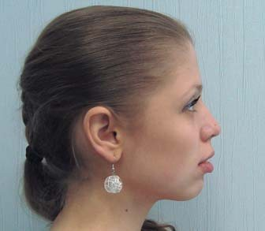
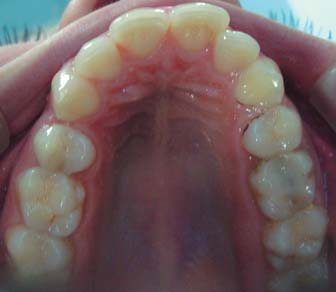
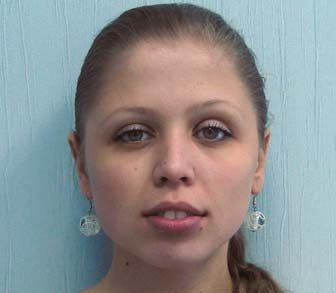
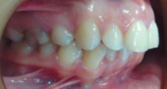
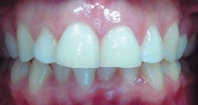
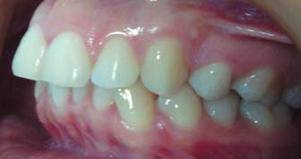
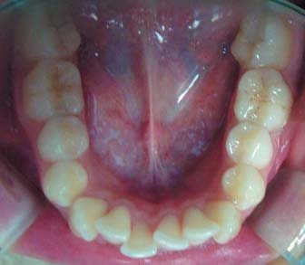
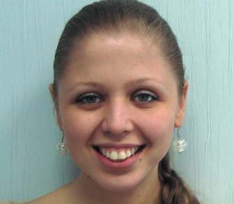
Профіль випуклий, губи в спокої не зімкнуті, дихання змішане. Гострий носо-лабіальний кут. Вираженість підборідної складки. Інтраоральне обстеження показало: слизова оболонка переддвер’я ротової порожнини в кольорі не змінена, його глибина 5 мм, прикріплення вуздечки верхньої губи на відстані 4 мм від міжзубного сосочка має достатню протяжність і не обмежує рухливість губи.
Стан слизової оболонки в зоні щік, дна ротової порожнини, піднебіння, язика без видимих патологічних змін. Вуздечка язика має нормальне прикріплення, не обмежує його рухливість. На задній стінці глотки ділянок гіпертрофії і запального процесу не спостерігалося. Серединні лінії верхнього і нижнього зубного ряду збігаються. Співвідношення молярів було II клас за Енглем, іклів – I клас.
Аналіз гіпсових моделей виявив дефіцит простору на верхній зубній дузі 1 мм, на нижній зубний дузі – 7 мм, оклюзійна крива Шпеє 3 мм (фото 2).
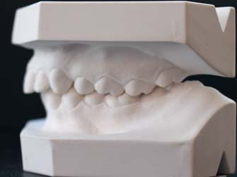
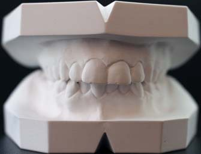
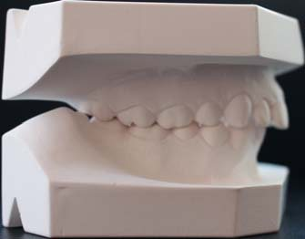
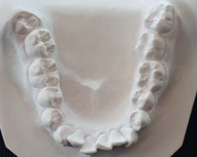
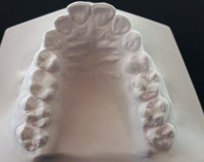
На ортопантомограмі резорбції і запальних змін не було. Відсутні зуби 14, 24 (фото 3).
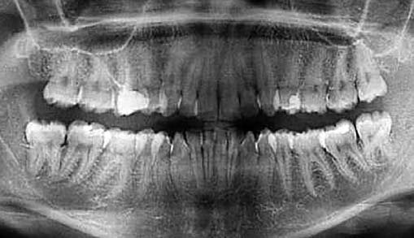
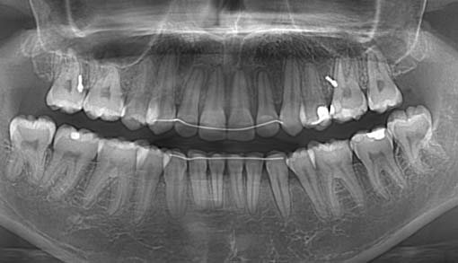
Розшифрування телерентгенографії (ТРГ) до лікування в бічній проекції показало скелетний II клас, кут ANB 7° (утворений найглибшим краєм на верхній щелепі – точкою А, з’єднанням носо-лобного шва – точкою Nа і найглибшою виїмкою на нижній щелепі – точкою В), SNA – 84° (кут між краніальною площиною SN і точкою А на верхній щелепі), SNB – 77° (кут, утворений перетином площини SN і точки В на нижній щелепі; фото 4).
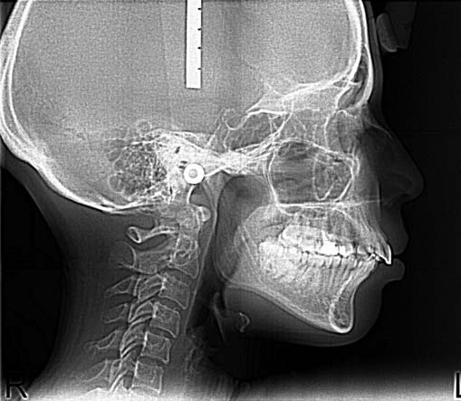
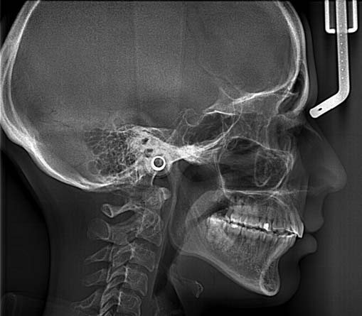
Нижньощелепний кут FMA був 26° (утворений нижньощелепною площиною – FH).
Нахил верхніх різців U1 до FH (кут, утворений віссю верхніх центральних різців U1 до FH) дорівнює 114°. IMPA був збільшений до 105° (кут між віссю нижніх центральних різців і нижньощелепною площиною). Occ P до FH (кут між оклюзійною площиною і FH) відповідав 14°. Відношення передньої оклюзійної висоти до задньої (індекс PFH/AFH) становило 0,7. Z-angle знижений до 65° (таблиця 1).
| Цефалометричні кути (°) | Середні значення | До лікування | Після лікування | 1 рік ретенції |
|---|---|---|---|---|
| SNA | 82 | 84 | 83 | 83 |
| SNB | 80 | 77 | 77 | 77 |
| ANB | 2 | 7 | 6 | 6 |
| FMA | 25 | 26 | 25 | 25 |
| PFH/AFH | 0,8 | 0,7 | 0,7 | 0,7 |
| FH к Occ P | 10 | 14 | 8 | 8 |
| Ui к FH | 114 | 114 | 107 | 107 |
| IMPA | 90 | 105 | 104 | 104 |
| Z-angle | 75 | 65 | 72 | 72 |
На підставі даних клінічних обстежень, антропометричного дослідження моделей щелеп, використання додаткових спеціальних методів дослідження – ТРГ у бічній проекції і ортопантомограми – було визначено діагноз: нейтральний тип росту лицьового скелета, скелетний II клас, бімаксилярна протрузія, співвідношення молярів – II клас, іклів – I клас за Енглем.
Лікувальні етапи, потрібні для корекції виявленої патології:
- санація ротової порожнини;
- вирівнювання зубних дуг;
- зменшення нахилу верхніх і нижніх центральних різців;
- корекція ясенної усмішки;
- встановлення співвідношення на іклах і молярах за I класом.
Запропоновано кілька варіантів лікування. Перший передбачав безекстракційний метод, заснований на дисталізації верхнього зубного ряду і апроксимальному зішліфовуванні емалі нижніх фронтальних різців. При цьому порушується співвідношення за I класом між іклами, може не поліпшуватися профіль обличчя, спостерігається нестабільність положення дисталізованих зубів, і тому рекомендується довічна ретенція для збереження результату. Другий, альтернативний лікувальний план – це видалення перших молярів на верхній і премолярів на нижній щелепі. Ретенційний період близько 24 місяців для стабілізації положення зубів. Пацієнтка обрала цей варіант лікування.
Встановлено незнімну апаратуру (пропис «Рот») з пазом 0,22 дюйма і фіксованою первинною нікель-титановою круглою дугою розміром 0,14 дюйма, потім 0,16 і прямокутною – 0,16-0,25 дюйма. Після вирівнювання зубних дуг була встановлена сталева прямокутна дуга 0,19-0,25 дюйма. Видалено перші моляри на верхній і премоляри на нижній зубній дузі. У міжкореневий простір між другими і першими молярами на верхній щелепі в діагональному напрямку під кутом 60° до поверхні кістки встановлено 2 мікрогвинти товщиною 1,5 мм і довжиною 7 мм («Dentos AbsoAnchor», Корея). На нижній щелепі установлено 2 мікрогвинти (товщиною 1,5 мм і довжиною 6 мм) між другими премолярами і першими молярами. Ретракцію іклів на обох щелепах провадили механікою ковзання (фото 5).
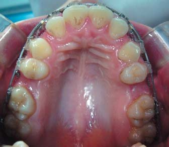
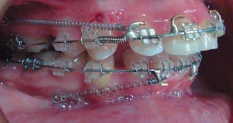
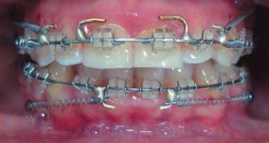
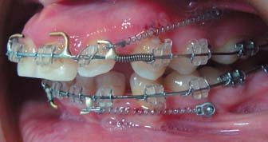
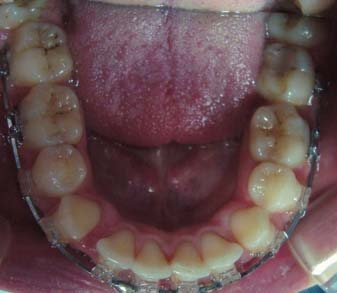
Для цього на верхній і нижній сталевій дузі між латеральними різцями та іклами напаювали гачки. На дугах між пайкою і брекетами іклів фіксували розкриваючі нітінолові пружини для переміщення іклів.
Щоб запобігти протрузивній дії розкриваючої пружини на фронтальні зуби, від головки мікрогвинта до напаяних гачків на дузі були фіксовані на обидва боки закриваючі нітінолові пружини силою 150 г. Під час кожного відвідування пацієнтки активували розкриваючу пружину шляхом її подовження на ширину брекета ікла. Після ретракції іклів бічні ділянки були пов’язані восьмиподібними лігатурами.
Для ретракції різців від мікрогвинтів до гачків на секційній дузі фіксували закриваючі нітінолові пружини силою 250 мг до повного закриття вільних просторів. Після цього було встановлено 2 мікрогвинти у міжкореневий простір між латеральними і центральними різцями для корекції ясенної усмішки (фото 6). Інтрузію різців робили, використовуючи еластичний ланцюжок із силою 150 г, фіксуючи його від головок мікрогвинтів навколо дуги.
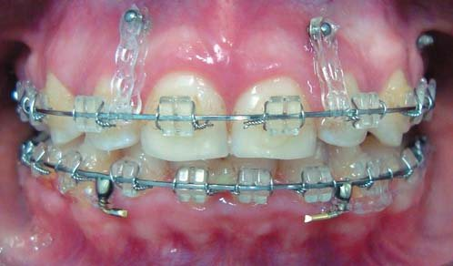
Результати лікування
Незнімну апаратуру зняли через 28 місяців після початку лікування. Слід відзначити поліпшення лицьового профілю на фотографії обличчя, на інтраоральних знімках зубні дуги вирівняні (фото 7).
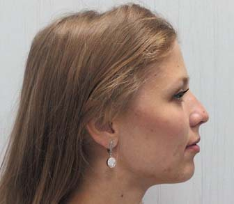
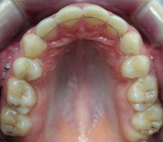
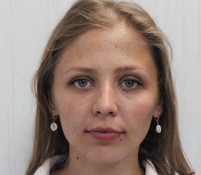
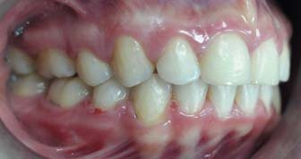
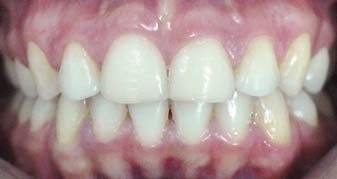
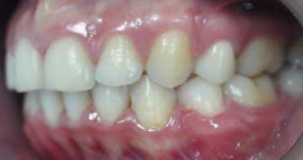
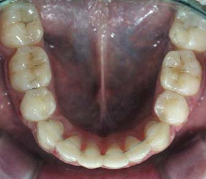
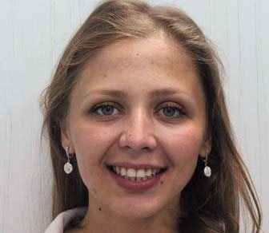
Аналіз гіпсових моделей показав правильні співвідношення різців у сагітальній і вертикальній площині. Співвідношення по іклах і молярах залишалися I класу за Енглем, збіг середньої лінії на верхньому і нижньому зубному ряду (фото 8).
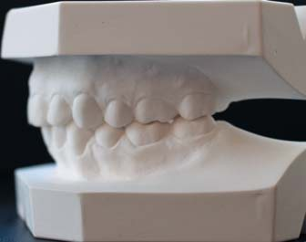
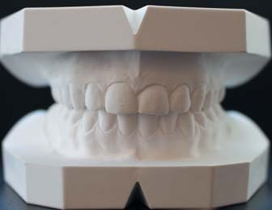
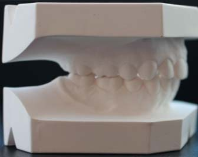
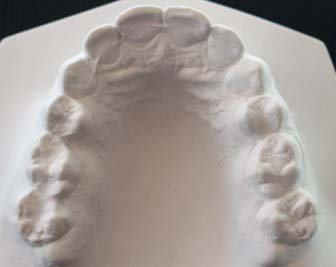
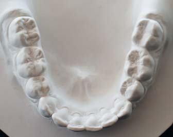
При діагностиці в артикуляторі у стані спокою виявлено щільний міжгорбиковий контакт між зубними рядами, відсутність передчасних контактів при бічних рухах нижньої щелепи, фронтальну спрямовуючу та іклове ведення з обох боків.
ТРГ у бічній проекції після лікування встановило поліпшення лицьових ознак: Z-angle збільшений до 72°, зменшення кута ANB до 6°. Кут FMA змінився, перед лікуванням він був 26°. Кут U1 до FH зменшився до 112°, IMPA відповідав 104°. Індекс PFH/AFH дорівнював 0,7.
Через рік ретенції при клінічному огляді був відсутній рецидив, спостерігалася стабільність раніше отриманих результатів. Співвідношення по іклах і молярах I класу за Енглем. Не було скупченості зубів у фронтальній ділянці на верхньому і нижньому зубному ряду. Зубні дуги правильної форми, сагітальний зазор і вертикальна оклюзія в нормі. Відсутні симптоми з боку скронево-нижньощелепного суглоба (фото 9).
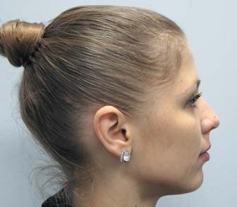
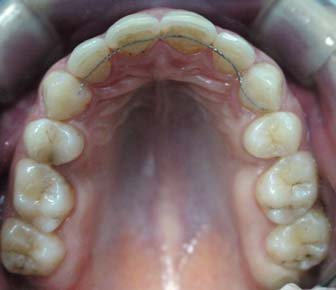
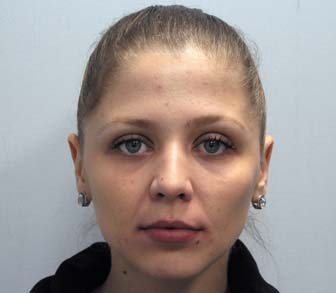
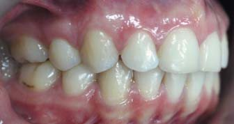
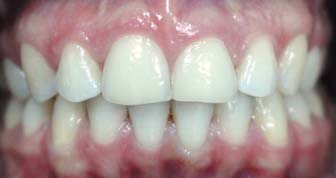
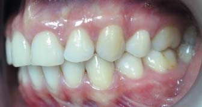
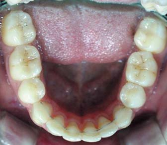
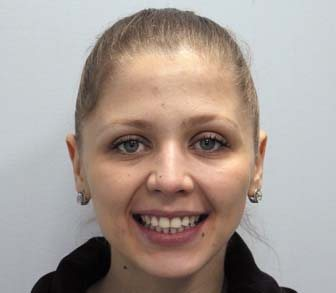
Аналіз ТРГ у бічній проекції через 1 рік після лікування показав стабільність раніше отриманих показників. Кут ANB – 6°, кути SNA – 83°, SNB – 77°, нижньощелепний кут FMA 25°. Положення верхніх різців U1 до FH дорівнює 116°. Відношення нижніх центральних різців – IMPA відповідає 104°. FH до Occ P 8°. Індекс PFH/AFH становив 0,7 (фото 10).
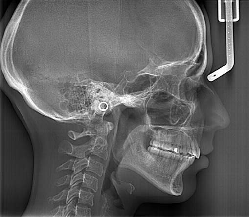
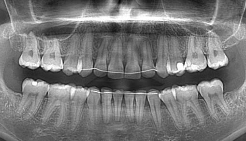
Аналіз і обговорення
Головні завдання лікування пацієнтів з бімаксилярною протрузією – естетичне поліпшення лицьового профілю та встановлення стабільної оклюзії.
Механіка лікування ґрунтується на максимальній ретракції передніх зубів після видалення перших премолярів. Це дає можливість зменшити надмірний лабіальний нахил верхніх і нижніх різців, знизити випинання губ, відтак поліпшується зовнішній вигляд обличчя.8
Дослідження останніх років із застосуванням метааналізу засвідчили, що правильне змикання у статичній і динамічній оклюзії не залежить від кількості зубів, що контактують між собою.9 Зменшення кількості зубів, не повністю дотичних в оклюзії, набагато цінніше, ніж інтактні зубні ряди з оклюзійними порушеннями. Було встановлено, що розмір апікальних базисів не впливає на м’язову функцію.10-12 Але якщо бімаксилярна протрузія – результат неправильного застосування механічних методів і зуби розміщуються наперед в базальній кістці, а вона має нормальний розмір і форму, видалення премолярів протипоказане.
Закрити екстракційні простори після видалення премолярів можна кількома способами.
Ретракція різців закриваючими петлями технікою спрямованої сили, запропонованою Dr. Charles Tweed, використовується вже понад 70 років.13 Розкриття петлі відбувається шляхом активації дистально розташованої за першими молярами омега-петлі до трубки другого моляра, завдяки чому розкривається основна петля близько 1 мм на місяць. При такій послідовній активації відбувається закриття екстракційних просторів з біологічною перебудовою кісткової тканини, пересування коренів здійснюється без їх резорбції.
Однак ретракція різців методом закриваючих петель продукує значний оральний нахил різців, оскільки сила докладання локалізується на апроксимальних поверхнях по лінії центру коронок зубів, де сходяться ніжки петлі. Для підтримання відповідного торку рекомендовано носіння не менше 12 годин на день високої головної тяги (High pull J-hook), що фіксується до припаяних гачків за другими різцями. Це відкидається багатьма пацієнтами з естетичних і соціальних міркувань.
З появою анкоражних систем було запропоновано робити ретракцію різців з опорою на мікрогвинти, встановлені в міжкореневий простір між другими премолярами і першими молярами. Тяга здійснювалася закриваючими пружинами від мікрогвинтів до гачків за латеральними різцями. Перевага цього способу – відсутність потреби в попередньому згинанні дуг для нахилу бічних зубів. Це значно економить час для прийому пацієнтів, знижує терміни лікування, позбавляє необхідності носити позаротовий апарат. Висотою тяги, тобто положенням мікрогвинта і висотою гачка, можна контролювати губно-піднебінні положення різців при ретракції.
Закриття проміжків після видалення починаємо з ретракції іклів, використовуючи техніку відбитого анкоражу, а не одночасну ретракцію всіх 6 фронтальних зубів. Переміщення іклів на сталевій дузі 0,19 х 0,25 дюйма відбувається з контрольованим нахилом коронки і кореня, що важливо під час проходження через вузький коридор губчастої кістки. Ретракція іклів таким способом повністю виключає навантаження на опорну частину в ході руху. Це дозволяє контролювати необхідну силу докладання, що мінімізує ризик резорбції.
Крім того, значення торку у фронтальній ділянці легше контролювати, застосовуючи силу тільки до зубів різцевої групи, а не до 6 фронтальних зубів (En Masse), де кожна пара має різну довжину кореня. Також важливе значення має тип профілю пацієнта. Для пацієнтів зі східним видом профілю переміщення зубів «En Masse» може бути кращим, ніж для європеоїдної групи, оскільки у них спостерігається більш виражене протрузивне положення різців, а довжина носа в профіль значно менша. При ретракції «En Masse» навіть значне зменшення торку різців негативно не позначається на лицьовому профілі.
Згідно з прийнятими клінічними рекомендаціями, максимальна ретракція різців верхньої щелепи можлива не більше 7 мм.14 Обмеженням для їх подальшого переміщення можуть служити лінгвальна кортикальна пластина і різцевий канал. При цьому можна їх перемістити корпусно без нахилу, спрямовуючи силу тяги близько до центру опору (середина кореня зуба). Положення нижніх різців змінюють головним чином за рахунок їх дистального нахилу, з огляду на те, що нижня щелепа має багато анатомічних і фізіологічних особливостей. Усі переміщення різців на ній обмежені в межах симфізу.
Беручи до уваги, що у пацієнтки спостерігалося значне оголення ясенного краю при усмішці, надмірне виступання різців з-під верхньої губи в спокої, було запропоновано після ретракції різців інтрузувати їх. Вважається, що ясенна усмішка є мультифакторною естетичною проблемою. Причини її появи – ротація палатальної площини, надмірний ріст переднього вертикального розміру верхньої щелепи внаслідок ротового дихання, незмикання кругового м’яза рота.
Інтрузія різців верхньої щелепи дає можливість зменшити виступання ясенного краю. Однак лише ортодонтичним шляхом, без стабільної опори, можна її виконати не більше 2 мм. Для інтрузії різців та корекції ясенної усмішки були використані мікрогвинти. Їх встановили з вестибулярної поверхні між центральними і бічними різцями. Послідовне вбивання слабкими силами з опорою на мікрогвинти сприяє ремоделюванню фронтальної ділянки верхньої альвеолярної кістки. Після інтрузії і ретракції верхніх центральних різців спостерігається ефект відновлення кругового м’яза рота, зменшення ясенної усмішки.
Таким чином, застосування мікрогвинтів для опори дає можливість закрити вільні простори без небажаного зсуву опорних зубів, поліпшити профіль, встановити ідеальні оклюзійні контакти, зменшити видимість ясенного краю при усмішці і виступання різців.
Висновки
- Лікування пацієнтів з бімаксилярною протрузією має бути спрямоване на поліпшення лицьового профілю і формування стабільної оклюзії.
- Механіка переміщення спрямована на ретракцію передніх зубів після видалення перших премолярів.
- Рух з опорою на мікрогвинти відбувається без зміщення опорних зубів, немає потреби в попередньому дистальному нахилі молярів для анкоражу і носінні позаротового апарату.
- Інтрузія різців верхньої щелепи дає можливість зменшити виступання ясенного краю, сприяє ремоделюванню фронтальної ділянки верхньої альвеолярної кістки. Після інтрузії та ретракції верхніх центральних різців спостерігається ефект відновлення кругового м’яза рота, корекція ясенної усмішки.
Література
- Calvin Case S. Dental Orthopedia and Correction of Cleft Palate. – 1921.
- Simon Paul W. Fundamental Principles of a Systematic Diagnosis of Dental Anomalies. – 1926.
- Tweed CH. A philosophy of orthodontic treatment // Am. J. Orthod. Oral. Surg. 1945. – №31. – P. 74-103.
- Keating PJ. Bimaxillary protrusion in the Caucasion: cephalometric study of the morphological features. Br J. – 1985. – Vol. 12. – P. 193-201.
- Luppanapornlarp S., Johanston I. The effects of premolar extraction a long-term comparison of outcomes in clear cut extraction and non-extraction class II patients / Angle. Orthodontist. Winter. – 1993. – Vol. 63. – P. 257-272.
- Al-Sibaite S, Hajeer MY. Randomized controlled trial assessment of changes following en-masse retraction with mini-implants anchorage compare to two-step retraction with conventional anchorage in patients with Class II Division 1 malocclusion: a randomized controlled trial // Eur. J. Orthod. – 2014. – Vol. 36. – P. 275-283.
- Upadhyay M, Yadav S, Nagaraj K, Patil S. Treatment effects of mini implants for en-masse retraction of anterior teeth in bialveolar dental protrusion patients: a randomized controlled tria / Am. J. Orthod. Dentofacial. Orthop. – 2008. – Vol. 34. – P. 18-29.
- Oliver BM. The influence of lip thickness and strain on upper lip response to incisor retraction / Am. J. Orthod. – 1982. – Vol. 82. – P. 141-149.
- Murilo Fernando., Neupmann Feres., Human Saltaji., Carlos Flores-Mir., Tarek El-Bialy., Samira Diar-Bakirly. Effectiveness of the transpalatal arch in controlling orthodontic anchorage in maxillary premolar extraction cases: A systematic review and meta-analys / The Angle Orthodontist. – 2017. – Vol. 87. – P. 147-158.
- Kunihiro Nagayama, Hiroshi Tomonari, Fumiaki Kitashima and Shouichi. Extraction treatment of a Class II division 2 malocclusion with mandibular posterior discrepancy and changes in stomatognathic function / The Angle Orthodontist. – 2015. – Vol. 85. – P. 314-321.
- Dong-Soon Choi, Bong-Kuen Cha, Insan Jang, Kyung-Hwa Kang and Sang-Cheol Kim. Three-dimensional finite element analysis of occlusal stress distribution in the human skull with premolar extraction // The Angle Orthodontist. – 2013. – Vol. 2. – P. 204-211.
- Muge Aksu and Iken Kocadereli. Arch Width Change in Extraction and Nonextraction Treatment in Class I Patiens // The Angle Orthodontist. – 2005. – Vol. 6. – P. 948-952.
- Merrifield LL. The profile line as aid critically evaluating facial esthetics // Am. J. Orthod. – 1966. – Vol. 11. – P. 804-822.
- Al-Sibaie S, Hajeer MY. Randomized controlled trial assessment of changes following en-masse retraction with mini-implants anchorage compared to two-step retraction with conventional anchorage in patients with Class II Division 1 malocclusion: a randomized controlled trial // Eur. J. Orthod. – 2014. – Vol. 36. – P. 275-283.